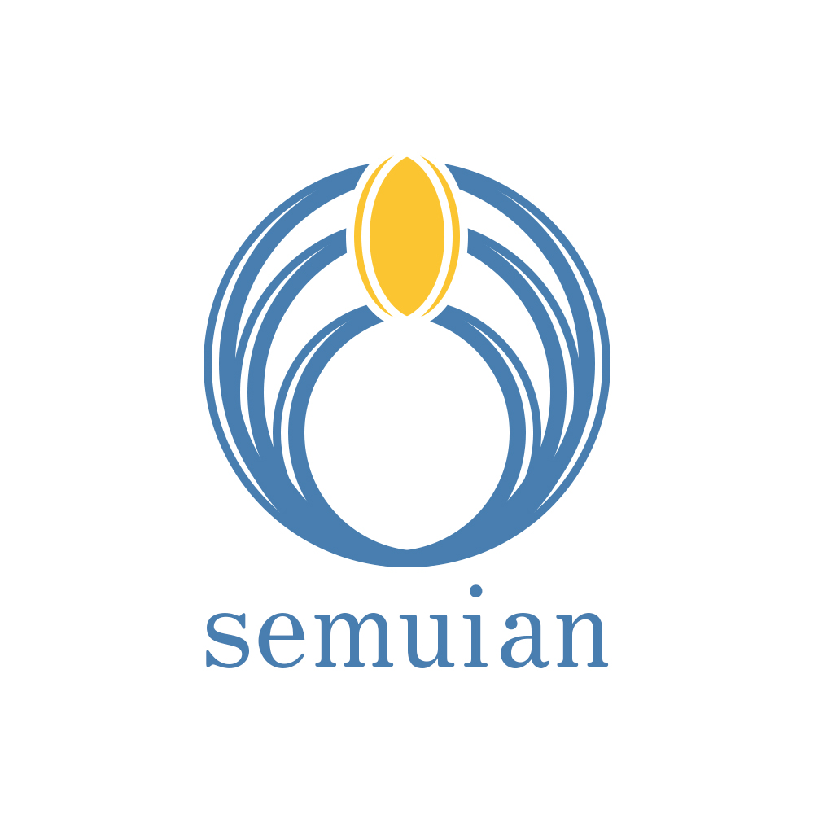

semuian(施無畏庵) is a publishing firm from Japan.
Latest Posts
YouTube
About Us
ほてい
施無畏庵（せむいあん）、庵主のほていです。 主にITのコンサルティングを提供。ベンチャー企業の立ち上げから、大企業や中小企業での業務、行政との事業など幅広く経験。一方で、霊感体質や霊的修行経験を活かして、数百件以上の占い・霊的支援を通して色々な方々の仕事や人生をサポート。
ガブさん
技術担当です。ハードからソフトまでいろいろいじります。趣味は庭いじり。